IPL
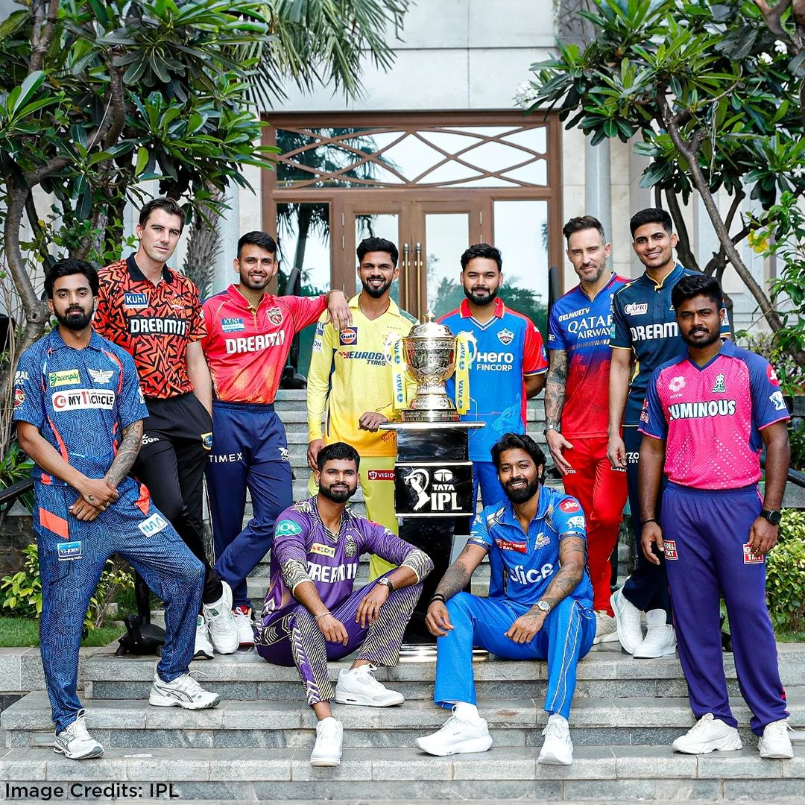
Indian Premier League
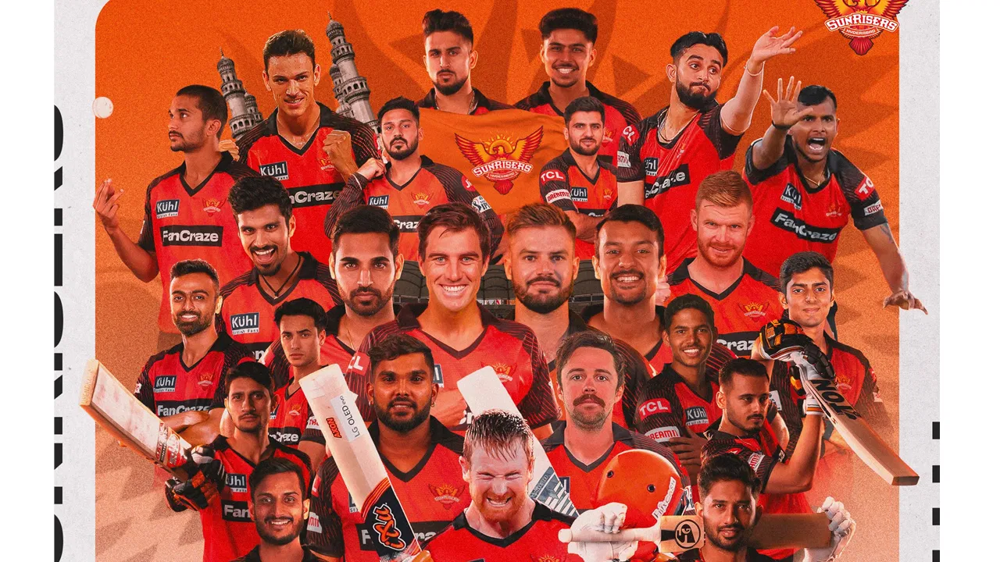
Sunrisers Hyderabad
SRH
Sunrisers Hyderabad (SRH) is a professional T20 team in IPL. Represents Hyderabad, Telangana, with a strong fan base. Founded in 2013, replaced Deccan Chargers. Won IPL title in 2016, and finished runners-up in 2018. Known for their strong bowling attack and consistent performances.
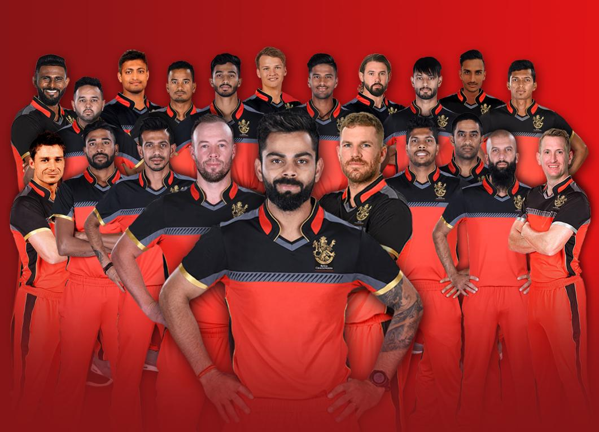
Royal Challengers
RCB
Royal Challengers Bangalore (RCB) is a professional T20 team in IPL. Represents Bangalore, Karnataka, with a massive fan base. Founded in 2008, one of the original IPL teams. Has finished runners-up three times (2009, 2011, 2016), but no title wins. Known for their strong batting line-up and star-studded teams.
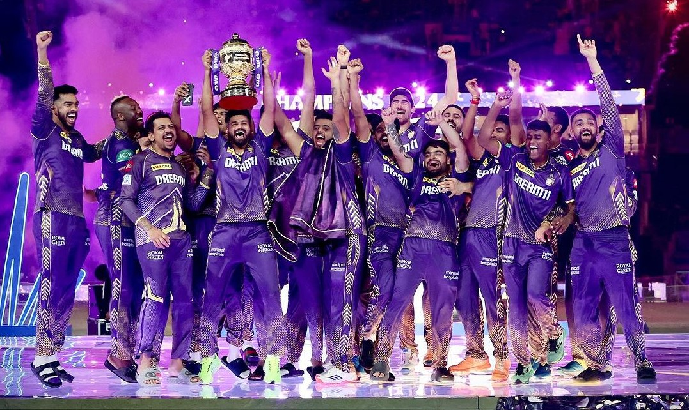
Kolkata Knight Riders
KKR
Kolkata Knight Riders (KKR) is a professional T20 team in IPL. Represents Kolkata, West Bengal, with a passionate fan base. Founded in 2008, one of the original IPL teams. Won IPL titles in 2012 and 2014 under Gautam Gambhir's leadership. Known for their aggressive playing style and iconic owners (Shah Rukh Khan, Juhi Chawla, and Jay Mehta).
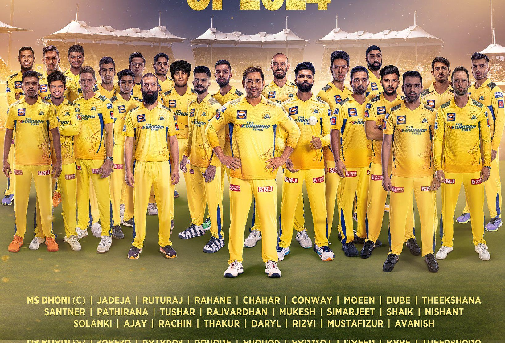
Chennai Super Kings
CSK
Chennai Super Kings (CSK) is a professional T20 team in IPL. Represents Chennai, Tamil Nadu, with a massive and loyal fan base. Founded in 2008, one of the original IPL teams. Won IPL titles in 2010, 2011, 2018, and 2021, under MS Dhoni's leadership. Known for their consistent performances, strong team culture, and "Whistle Podu" spirit.
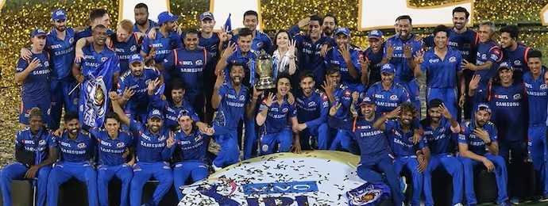
Mumbai Indians
MI
Mumbai Indians (MI) is a professional T20 team in IPL. Represents Mumbai, Maharashtra, with a huge and dedicated fan base. Founded in 2008, one of the original IPL teams. Won IPL titles in 2013, 2015, 2017, 2019, and 2020, most titles in IPL history. Known for their strong team balance, clever leadership, and "Paltan" spirit.
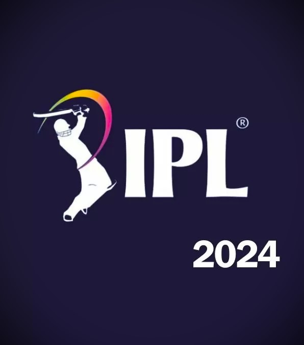
Name Slider
Description
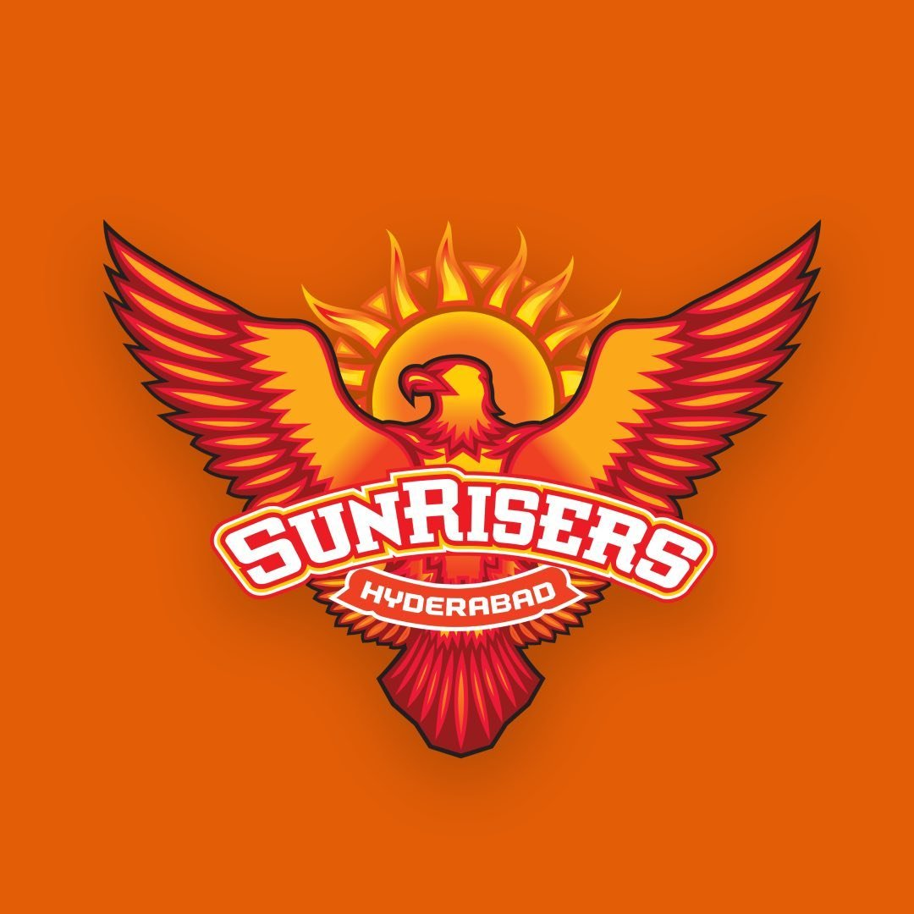
Name Slider
Description
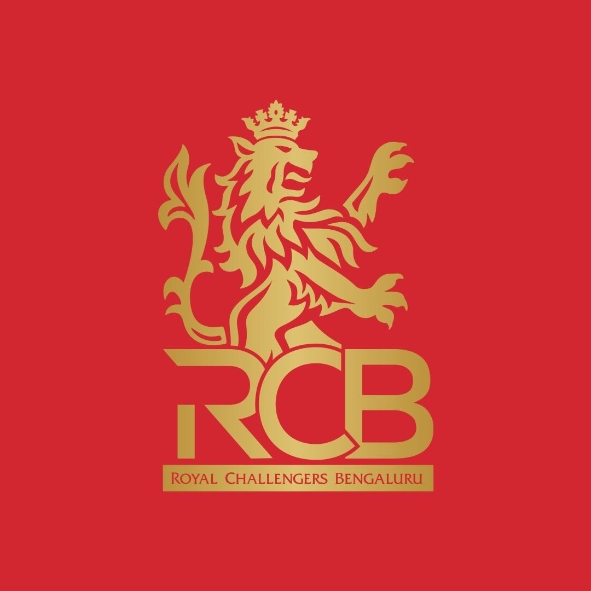
Name Slider
Description
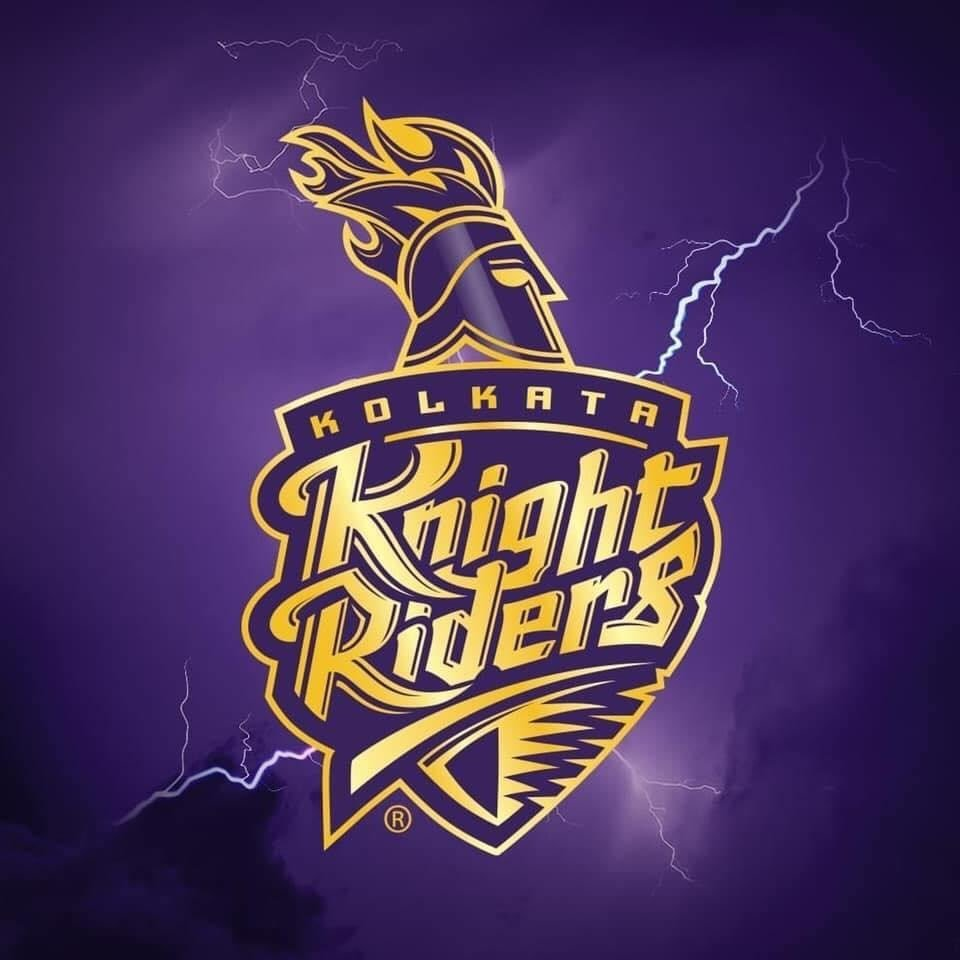
Name Slider
Description
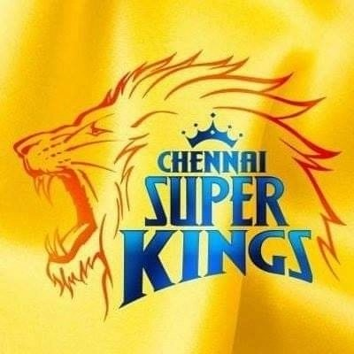
Name Slider
Description

Name Slider
Description